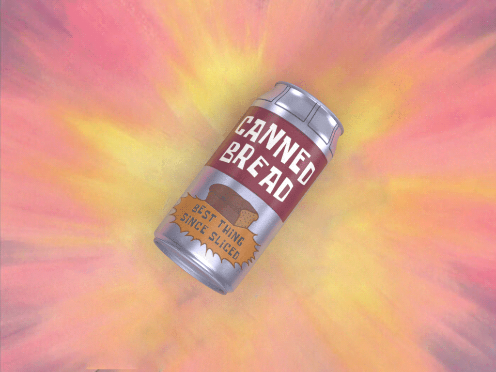

Strielok's Canned Bread

Description
Bread, but in a can.
Ingredients
- Bread
- Not "Bread"
- Tourist's delight
- Milk (ask Sidorovich)
Steps
- Eat the Tourist's delight
- Stuff the bread into the leftover can. You don't have to clean it, that way it will acquire some extra taste.
- You can eat it with milk, enjoy.